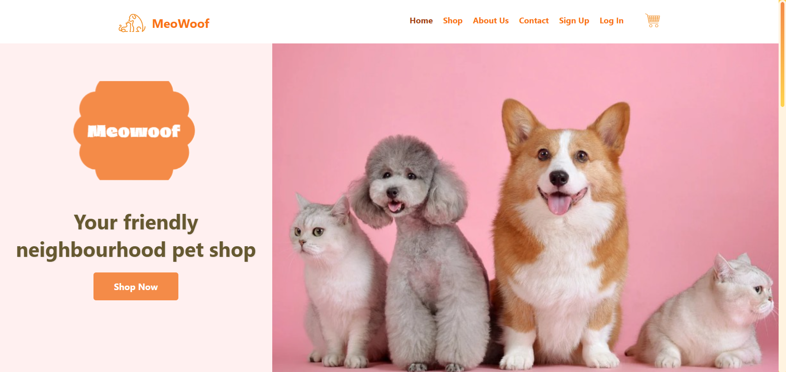
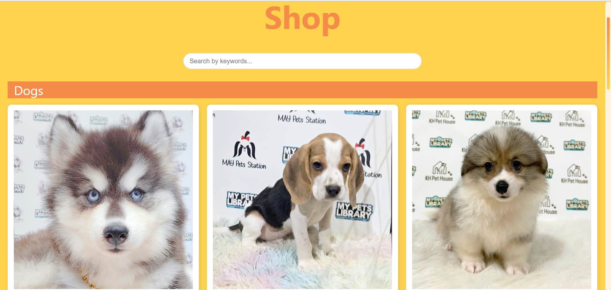
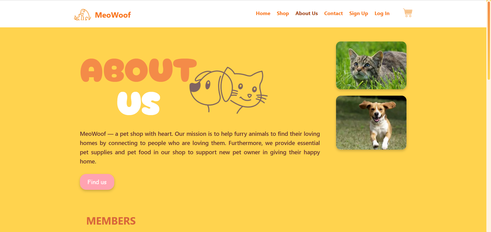
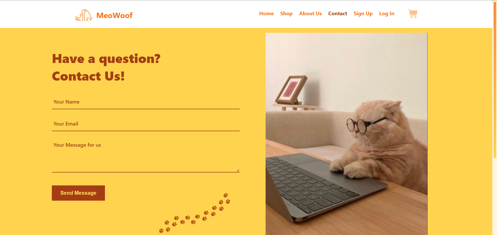
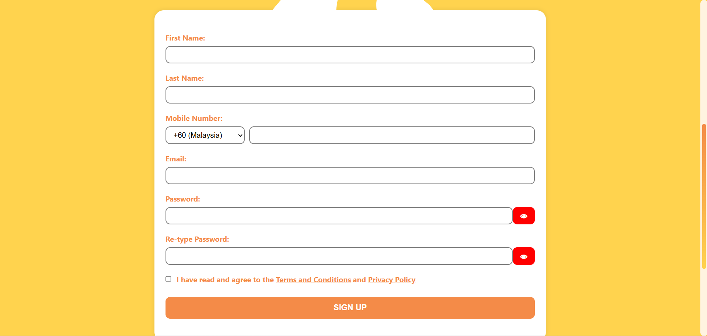
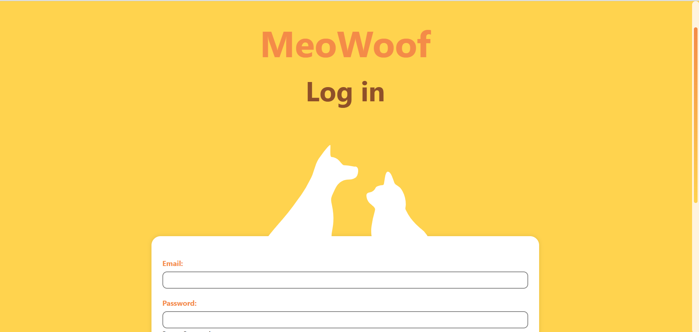
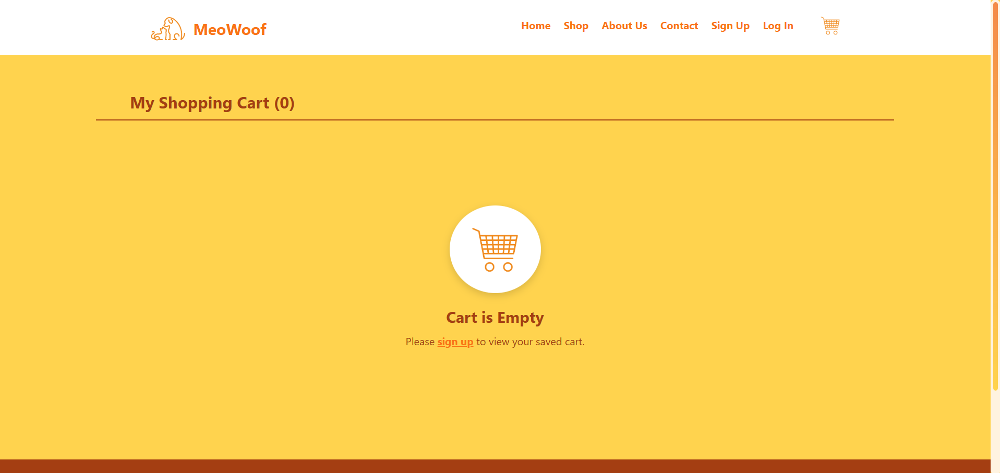
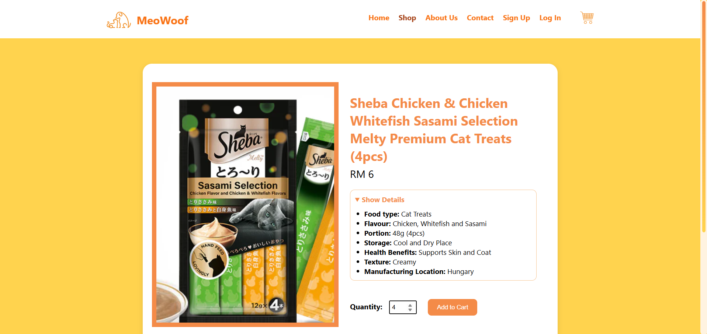

This project showcases a user-focused website design for a pet shop, developed using HTML, CSS, and JavaScript. The design emphasizes intuitive navigation, clear content structure, and a responsive layout that adapts seamlessly to different viewport sizes and devices. The development process involved researching common features in e-commerce and pet-related websites to identify usability strengths and areas for improvement. These insights informed the creation of a streamlined user experience, featuring a validated contact form, login and sign-up functionality, and personalized team member profiles. The final product delivers a clean, accessible, and visually engaging interface that balances practicality with thoughtful design.







